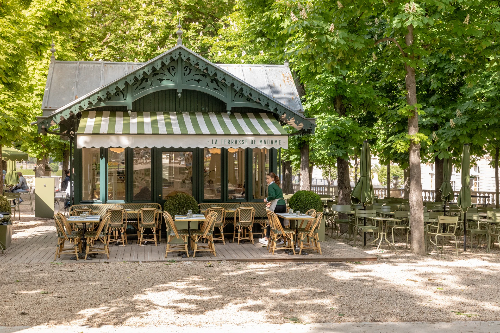
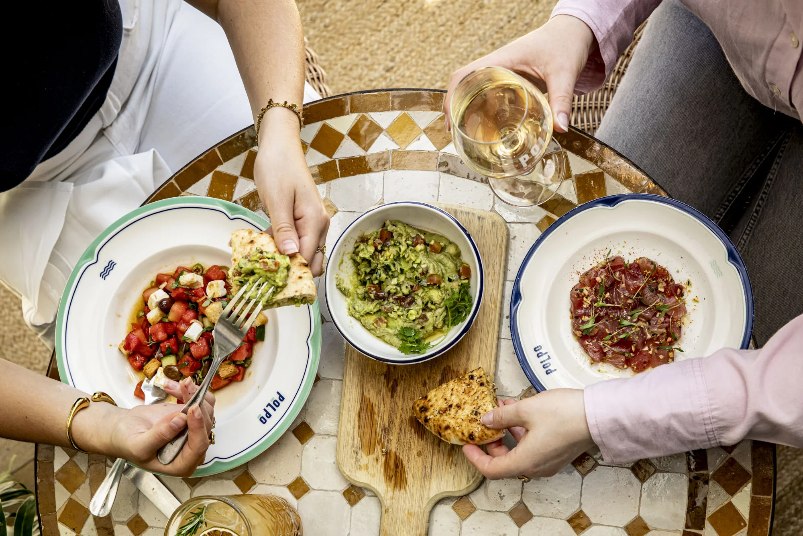
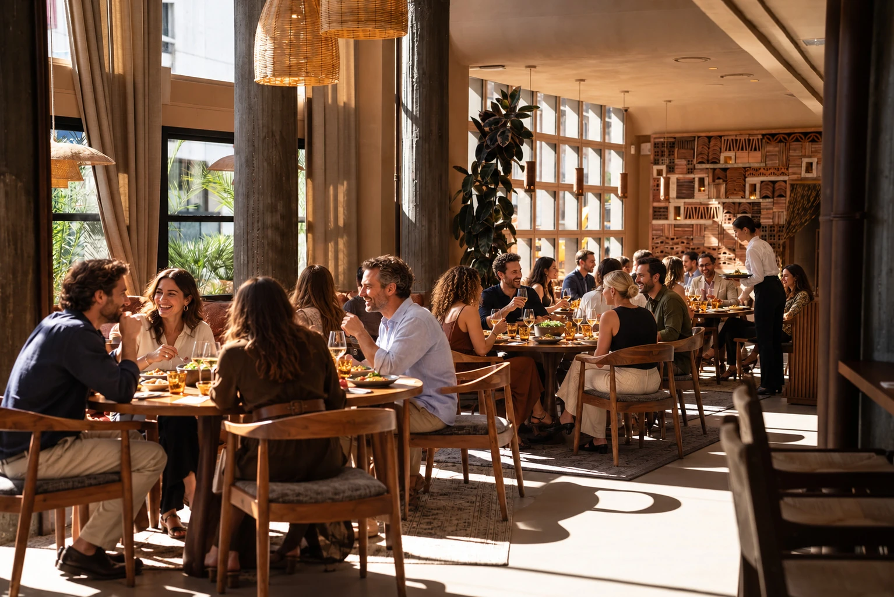

Nos engagements
Recevoir de façon responsable
Une cuisine plus durable, des ressources préservées, des équipes respectées : ce qui guide nos maisons au quotidien, et ce que cela change pour votre événement.
Une hospitalité positive
Bien recevoir, c’est aussi choisir ce que l’on sert, ce que l’on consomme et la façon dont on travaille ensemble.
Dans l’assiette
Une cuisine responsable
Avec nos chefs et nos équipes achats, nous améliorons nos approvisionnements carte après carte.

- Des produits frais, au rythme des saisons
- Des produits français et labellisés
- Au moins un plat végétarien sur chaque carte
- Une pêche plus durable
- Davantage de bien-être animal
- Vers zéro huile de palme
Pour votre événement
Un événement
plus responsable
Dites-le-nous dès votre demande : notre équipe construit avec vous un événement à votre image.

- Un menu végétarien ou de saison
- Un lieu accessible en transports en commun
- Des quantités ajustées au nombre d’invités
- Une décoration de saison, sans superflu
Les femmes et les hommes
L’humain au cœur
de nos choix
Recevoir est avant tout un métier de service. Nous veillons sur celles et ceux qui le font vivre, chaque jour, dans nos maisons.

- Inclusion, diversité et égalité des chances
- Transmission des savoir-faire et formation
- Sécurité et bien-être au travail
- Des actions pour les communautés locales
Rapport RSE
Nos actions et nos
résultats, en détail
Chaque année, notre rapport fait le point sur nos engagements, nos indicateurs et nos prochaines étapes.
Votre événement
Parlons de votre projet
La date, le format, le nombre d’invités : nous vous proposons les lieux qui s’y prêtent, avec un seul interlocuteur du premier échange au jour J.